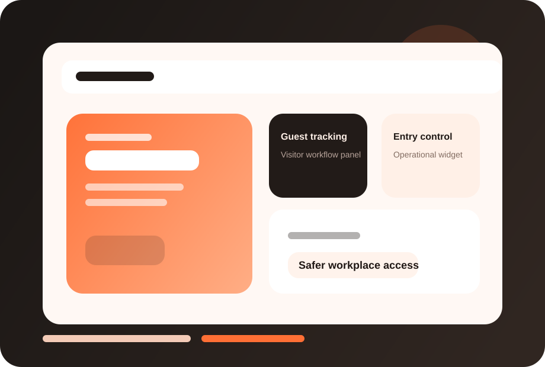

Better security visibility
Know who visited, who approved and when access occurred.
FuzionHR Visitor Management helps organizations register guests, route approvals and improve entry visibility without manual front-desk complexity.

This page now has a dedicated visual treatment, stronger readability, and screenshot-ready product areas so you can drop in actual FuzionHR UI captures later.
Clearer module identity and stronger visual recognition.
Dedicated screenshot frames for real product views.
Structure remains intact while the design feels richer.
Know who visited, who approved and when access occurred.
Make guest handling feel more organized and professional.
Standardize a business process that is often overlooked until it breaks.
These screenshot frames are placeholders for your actual product UI. Once you share real captures, we can place them here with polished annotations.
Replace this frame with your real product screenshot to show the live FuzionHR UI.
Use this area for dashboards, approvals, reports or employee-facing views.